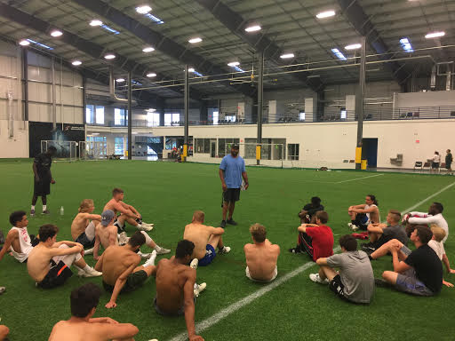
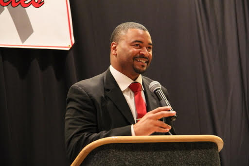

Services
- Corporate
- High Schools
- Teams and Organizations
- Small Businesses
- Sports & Training Organizations
Testimonials
Jay Foreman was our guest speaker at our end of the year Athletic Banquet. Mr. Foreman brought the message of commitment to our young student athletes. A message all teenagers need to hear. His message was fantastic. Many of our students walked away very impressed. First of all, they were amazed that a former college and NFL star spent his time with us at a small 2A Kansas High School. Secondly, students were on the edge of their seats listening to Mr. Foreman’s words. Our coaches were excited to have Mr. Foreman here with us and sharing his thoughts with our community. As the principal, I appreciate Mr. Foreman for giving us his time and sharing his message on commitment. I would highly recommend your school or group bring in Mr. Foreman. He is sure to leave a lasting impression.
The UB School of Management, Center for Entrepreneurial Leadership has had the pleasure of working with Jay Foreman on the marketing efforts of the Allstate Minority Entrepreneur Program. Jay has provided us with top notch public relations exercises, excellent customer service, and great attention to detail. His speaking ability is motivating and cultivating and really took the room by storm. We highly recommend Jay. We have seen a marked improvement in our marketing program largely due to his efforts!
This is just a note to thank you personally for assisting my business in our strategic planning initiatives for 2010. I’m impressed in how efficient the service is and how much we’ve benefited in our breakout analysis sessions with you. Your personal business insight is refreshing, extremely candid and inspiring. I appreciate it when a consultant challenges the status quo and can guide us down new directions we never saw before. Your passion for what you do is evident in every call, meeting and email. I really feel like you are one of the team and that makes all the difference.